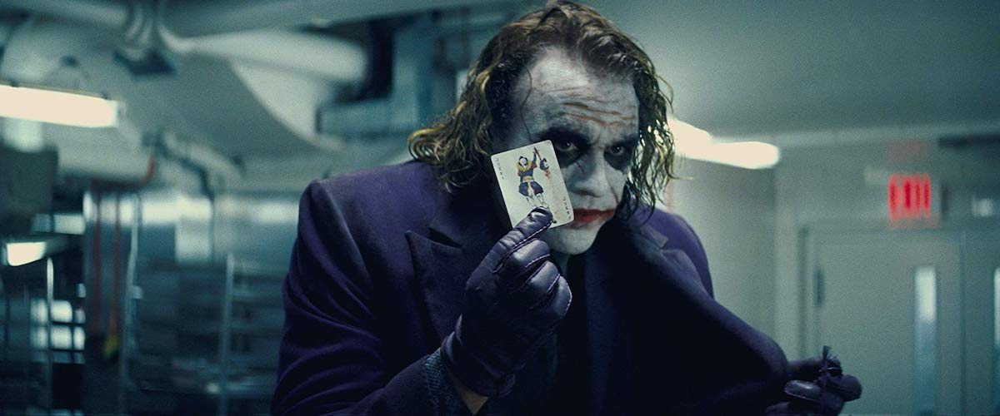

“Batman” isn’t a comic book anymore. Christopher Nolan’s “The Dark Knight” is a haunted film that leaps beyond its origins and becomes an engrossing tragedy. It creates characters we come to care about. That’s because of the performances, because of the direction, because of the writing, and because of the superlative technical quality of the entire production. This film, and to a lesser degree “Iron Man,” redefine the possibilities of the “comic-book movie.” “The Dark Knight” is not a simplistic tale of good and evil. Batman is good, yes, The Joker is evil, yes. But Batman poses a more complex puzzle than usual: The citizens of Gotham City are in an uproar, calling him a vigilante and blaming him for the deaths of policemen and others. And the Joker is more than a villain. He’s a Mephistopheles whose actions are fiendishly designed to pose moral dilemmas for his enemies...
Source